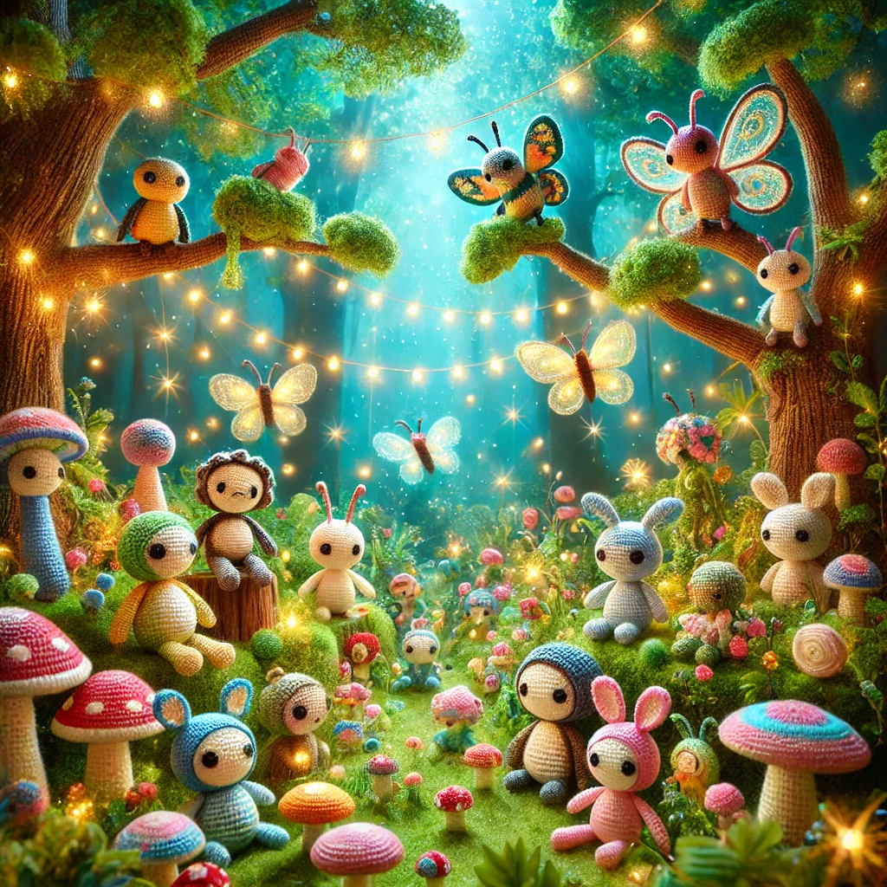

En los confines de un mundo tejido con hilos de fantasía, nació una antigua tradición conocida como amigurumi.
Hace siglos, en un pequeño pueblo escondido entre montañas de lana, los sabios artesanos descubrieron un secreto guardado por las estrellas: que, con un simple gancho y un hilo mágico, podían dar vida a pequeñas criaturas. Estas figuras, llamadas amigurumis, no solo eran adorables, sino que también llevaban consigo la esencia de la felicidad y la protección. Con cada puntada, los artesanos tejían no solo un muñeco, sino un guardián de sueños y deseos. Desde entonces, los amigurumis han viajado por todo el mundo, compartiendo su magia y creando lazos invisibles entre aquellos que los poseen.
Bienvenidos a un mundo donde los hilos cobran vida y los sueños se entrelazan con suaves puntadas.
En este rincón mágico, los amigurumis emergen de un ovillo de fantasía, trayendo consigo historias tejidas con amor y dedicación. Aquí, cada pequeño ser tiene su propia alma de algodón, esperando ser adoptado por un corazón soñador. Desde criaturas de bosques encantados hasta personajes sacados de cuentos de hadas, cada creación es un puente hacia lo maravilloso. Explora, imagina y déjate envolver por la magia que solo un amigurumi puede ofrecer. ¡Que la aventura comience!